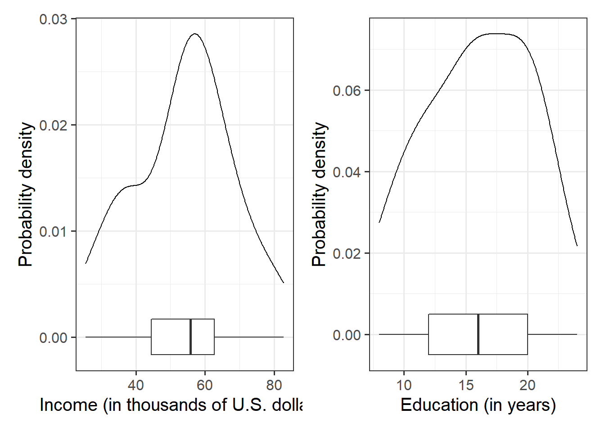
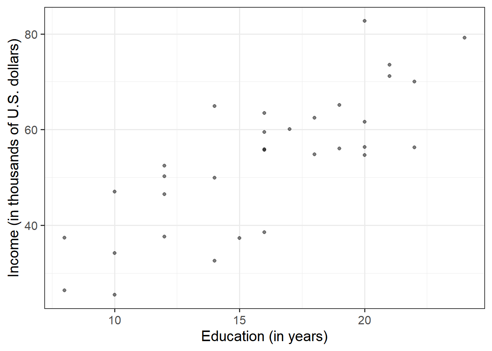
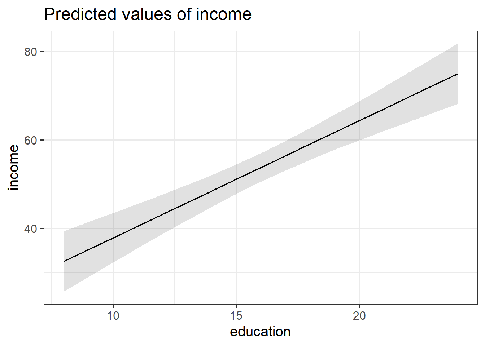
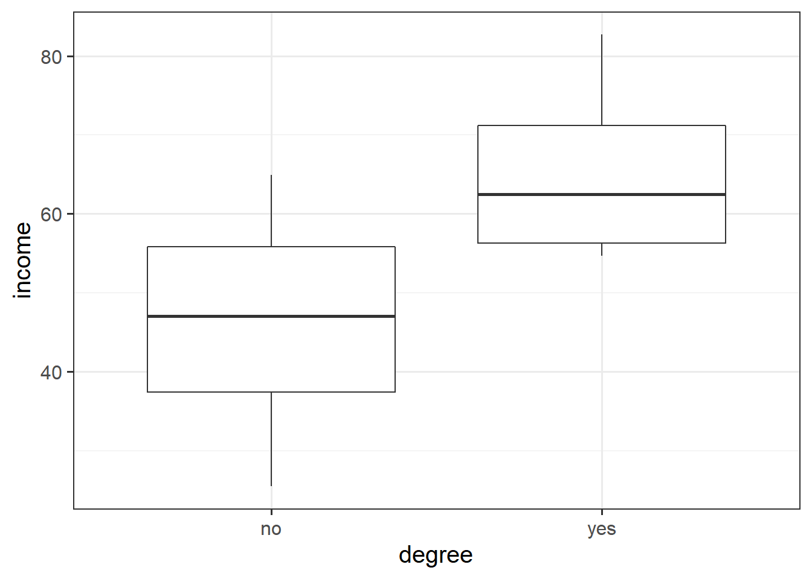

Research Question: is there an association between the level of education and an employee’s income?
Data: riverview.csv
Our data for these exercises is from an hypothetical study into income disparity for employees in a local authority. The riverview data, which come from Lewis-Beck, 2015, contain five attributes collected from a random sample of \(n=32\) employees working for the city of Riverview, a hypothetical midwestern city in the US. The attributes include:
education: Years of formal education
income: Annual income (in thousands of U.S. dollars)
# A tibble: 6 × 6
education income seniority gender male party
<dbl> <dbl> <dbl> <chr> <dbl> <chr>
1 8 37.4 7 male 1 Democrat
2 8 26.4 9 female 0 Independent
3 10 47.0 14 male 1 Democrat
4 10 34.2 16 female 0 Independent
5 10 25.5 1 female 0 Republican
6 12 46.5 11 female 0 Democrat
Question 2
Let us first visualise and describe the marginal distributions of those variables which are of interest to us. These are the distribution of each variable (employee incomes and education levels) without reference to the values of the other variables.
Hints:
You could use, for example, geom_density() for a density plot or geom_histogram() for a histogram.
Look at the shape, center and spread of the distribution. Is it symmetric or skewed? Is it unimodal or bimodal?
Do you notice any extreme observations?
We can plot the marginal distribution of employee incomes as a density curve, and add a boxplot underneath to check for the presence of outliers. The width of the geom_boxplot() is always quite wide, so I want to make it narrower so that we can see it at the same time as the density plot. Deciding on the exact value for the width here is just trial and error:
library(patchwork)# the patchwork library allows us to combine plots togetherggplot(data = riverview, aes(x = income)) +geom_density() +geom_boxplot(width =1/300) +labs(x ="Income (in thousands of U.S. dollars)", y ="Probability density") +ggplot(data = riverview, aes(x = education)) +geom_density() +geom_boxplot(width =1/100) +labs(x ="Education (in years)", y ="Probability density")

Figure 1: Density plot and boxplot of employee incomes and education levels
The plots suggests that the distributions of employee incomes and education levels are both unimodal. Most of the incomes are between roughly $45,000 and $70,000, and most people have between 12 and 20 years of education. Furthermore, the boxplot does not highlight any outliers in either variable.
To further summarize a distribution, it is typical to compute and report numerical summary statistics such as the mean and standard deviation. One way to compute these values is to use the summarise()/summarize() function from the tidyverse library:
# A tibble: 1 × 4
e sd_income mean_edu sd_edu
<dbl> <dbl> <dbl> <dbl>
1 53.7 14.6 16 4.36
The marginal distribution of income is unimodal with a mean of approximately $53,700. There is variation in employees’ salaries (SD = $14,553).
The marginal distribution of education is unimodal with a mean of 16 years. There is variation in employees’ level of education (SD = 4.4 years).
Question 3
After we’ve looked at the marginal distributions of the variables of interest in the analysis, we typically move on to examining relationships between the variables.
Visualise and describe the relationship between income and level of education among the employees in the sample.
Think about:
Direction of association
Form of association (can it be summarised well with a straight line?)
Strength of association (how closely do points fall to a recognizable pattern such as a line?)
Unusual observations that do not fit the pattern of the rest of the observations and which are worth examining in more detail.
Because we are investigating how income varies when varying years of formal education, income here is the dependent variable (on the y-axis), and education is the independent variable (on the x-axis).
ggplot(data = riverview, aes(x = education, y = income)) +geom_point(alpha =0.5) +labs(x ="Education (in years)", y ="Income (in thousands of U.S. dollars)")

Figure 2: The relationship between employees education level and income.
There is a strong positive linear relationship between education level and income for the employees in the sample. High incomes tend to be observed, on average, with more years of formal education. The scatterplot does not highlight any outliers.
To comment numerically on the strength of the linear association we might compute the correlation coefficient that we were introduced to in 5A: Covariance & Correlation
riverview %>%select(education, income) %>%cor()
education income
education 1.0000000 0.7947847
income 0.7947847 1.0000000
that is, \(r_{\text{education, income}} = 0.79\)
Question 4
Using the lm() function, fit a linear model to the sample data, in which employee income is explained by education level. Assign it to a name to store it in your environment.
As the variables are in the riverview dataframe, we would write:
model1 <-lm(income ~1+ education, data = riverview)
Question 5
Interpret the estimated intercept and slope in the context of the question of interest.
Hints: We saw how to extract lots of information on our model using summary() (see 7A #model-summary), but there are lots of other functions too.
If we called our linear model object “model1” in the environment, then we can use:
- type model1, i.e. simply invoke the name of the fitted model; - type model1$coefficients; - use the coef(model1) function; - use the coefficients(model1) function; - use the summary(model1)$coefficients to extract just that part of the summary.
The estimated average income associated with zero years of formal education is $11,321.
For the estimated slope we get:
The estimated increase in average income associated with a one year increase in education is $2,651.
Question 6
Consider the following:
In fitting a linear regression model, we make the assumption that the errors around the line are normally distributed around zero (this is the \(\epsilon \sim N(0, \sigma)\) bit.)
About 95% of values from a normal distribution fall within two standard deviations of the centre.
We can obtain the estimated standard deviation of the errors (\(\hat \sigma\)) from the fitted model using sigma() and giving it the name of our model.
What does this tell us?
The estimated standard deviation of the errors can be obtained by:
sigma(model1)
[1] 8.978116
For any particular level of education, employee incomes should be distributed above and below the regression line with standard deviation estimated to be \(\hat \sigma = 8.98\). Since \(2 \hat \sigma = 2 (8.98) = 17.96\), we expect most (about 95%) of the employee incomes to be within about $18,000 from the regression line.
Question 7
Compute the model-predicted income for someone with 1 year of education.
Hints: Given that you know the intercept and slope, you can calculate this algebraically. However, try to also use the predict() function.
Using predict(), we need to give it our model, plus some new data which contains a person with only 1 year of education. First we make a new dataframe with an education variable, with one entry which has the value 1, and then we give that to predict():
We are asking what the predicted income is for someone with 1 year of education. So we can substitute in “1” for the Education variable:
\[
\begin{align}
Income &= 11.32 + 2.65\cdot Education \\
Income &= 11.32 + 2.65\cdot 1 \\
Income &= 11.32 + 2.65\\
Income &= 13.97 \\
\end{align}
\]
Question 8
Test the hypothesis that the population slope is zero — that is, that there is no linear association between income and education level in the population.
Hints: you don’t need to do anything for this, you can find all the necessary information in summary() of your model.
See 7A #inference-for-regression-coefficients.
The information is already contained in the row corresponding to the variable “education” in the output of summary(), which reports the t-statistic under t value and the p-value under Pr(>|t|):
summary(model1)
Call:
lm(formula = income ~ 1 + education, data = riverview)
Residuals:
Min 1Q Median 3Q Max
-15.809 -5.783 2.088 5.127 18.379
Coefficients:
Estimate Std. Error t value Pr(>|t|)
(Intercept) 11.3214 6.1232 1.849 0.0743 .
education 2.6513 0.3696 7.173 5.56e-08 ***
---
Signif. codes: 0 '***' 0.001 '**' 0.01 '*' 0.05 '.' 0.1 ' ' 1
Residual standard error: 8.978 on 30 degrees of freedom
Multiple R-squared: 0.6317, Adjusted R-squared: 0.6194
F-statistic: 51.45 on 1 and 30 DF, p-value: 5.562e-08
Recall that the p-value 5.56e-08 in the Pr(>|t|) column simply means \(5.56 \times 10^{-8}\). This is a very small value, hence we will report it as <.001 following the APA guidelines.
A significant association was found between level of education (in years) and income, with income increasing by on average $2,651 for every additional year of education (\(b = 2.65\), \(SE = 0.37\), \(t(30)=7.17\), \(p<.001\)).
Question 9
What is the proportion of the total variability in incomes explained by the linear relationship with education level?
Hints:
- The question asks to compute the value of \(R^2\), but you might be able to find it already computed somewhere (so much stuff is already in summary() of the model. - See 7A #r2 if you’re unsure about what \(R^2\) is.
For the moment, ignore “Adjusted R-squared”. We will come back to this later on.
summary(model1)
Call:
lm(formula = income ~ 1 + education, data = riverview)
Residuals:
Min 1Q Median 3Q Max
-15.809 -5.783 2.088 5.127 18.379
Coefficients:
Estimate Std. Error t value Pr(>|t|)
(Intercept) 11.3214 6.1232 1.849 0.0743 .
education 2.6513 0.3696 7.173 5.56e-08 ***
---
Signif. codes: 0 '***' 0.001 '**' 0.01 '*' 0.05 '.' 0.1 ' ' 1
Residual standard error: 8.978 on 30 degrees of freedom
Multiple R-squared: 0.6317, Adjusted R-squared: 0.6194
F-statistic: 51.45 on 1 and 30 DF, p-value: 5.562e-08
Approximately 63% of the total variability in employee incomes is explained by the linear association with education level.
Question 10
Look at the output of summary() of your model. Identify the relevant information to conduct an F-test against the null hypothesis that the model is ineffective at predicting income using education level.
Call:
lm(formula = income ~ 1 + education, data = riverview)
Residuals:
Min 1Q Median 3Q Max
-15.809 -5.783 2.088 5.127 18.379
Coefficients:
Estimate Std. Error t value Pr(>|t|)
(Intercept) 11.3214 6.1232 1.849 0.0743 .
education 2.6513 0.3696 7.173 5.56e-08 ***
---
Signif. codes: 0 '***' 0.001 '**' 0.01 '*' 0.05 '.' 0.1 ' ' 1
Residual standard error: 8.978 on 30 degrees of freedom
Multiple R-squared: 0.6317, Adjusted R-squared: 0.6194
F-statistic: 51.45 on 1 and 30 DF, p-value: 5.562e-08
From the summary(model1), the relevant row is just below the \(R^2\), where it states:
F-statistic: 51.45 on 1 and 30 DF, p-value: 5.562e-08
The overall test of model utility was significant \(F(1, 30) = 51.45, p < .001\), indicating evidence against the null hypothesis that the model is ineffective (that education is not a useful predictor of income).
Question 11
Create a visualisation of the estimated association between income and education.
Hints:
Check 7A#example, which shows an example of using the sjPlot package to create a plot.
library(sjPlot)plot_model(model1, type="eff")
$education

Question 12
Let’s suppose instead of having measured education in years, researchers simply asked “have you had more than 18 years of education?”, assuming this to be indicative of having a degree.
The code below creates a this new variable for us:
model2 <-lm(income ~ degree, data = riverview)summary(model2)
Call:
lm(formula = income ~ degree, data = riverview)
Residuals:
Min 1Q Median 3Q Max
-20.6038 -8.6706 0.3053 8.8789 18.8432
Coefficients:
Estimate Std. Error t value Pr(>|t|)
(Intercept) 46.083 2.589 17.797 < 2e-16 ***
degreeyes 18.854 4.063 4.641 6.41e-05 ***
---
Signif. codes: 0 '***' 0.001 '**' 0.01 '*' 0.05 '.' 0.1 ' ' 1
Residual standard error: 11.29 on 30 degrees of freedom
Multiple R-squared: 0.4179, Adjusted R-squared: 0.3985
F-statistic: 21.54 on 1 and 30 DF, p-value: 6.412e-05
(Intercept) = the estimated income of employees without a degree (\(46,083\))
degreeyes = the estimated change in income from employees without a degree to employees with a degree
ggplot(riverview, aes(x = degree, y = income)) +geom_boxplot()

Basic Tests are Linear Models!
Question 13
We’ve actually already seen a way to analyse questions of this sort (“is the average income different between those with and those without a degree?”)
Run the following t-test, and consider the statistic, p value etc. How does it compare to the model in the previous question?
t.test(income ~ degree, data = riverview, var.equal =TRUE)
Two Sample t-test
data: income by degree
t = -4.6408, df = 30, p-value = 6.412e-05
alternative hypothesis: true difference in means between group no and group yes is not equal to 0
95 percent confidence interval:
-27.15051 -10.55673
sample estimates:
mean in group no mean in group yes
46.08284 64.93646
It is identical! the \(t\)-statistics are the same, the p-values are the same, the degrees of freedom. Everything!
The two sample t-test is actually just a special case of the linear model, where we have a numeric outcome variable and a binary predictor!
And… the one-sample t-test is the linear model without any predictors, so just with an intercept.
t.test(riverview$income, mu =0)
One Sample t-test
data: riverview$income
t = 20.89, df = 31, p-value < 2.2e-16
alternative hypothesis: true mean is not equal to 0
95 percent confidence interval:
48.49519 58.98906
sample estimates:
mean of x
53.74213
interceptonly_model <-lm(income ~1, data = riverview)summary(interceptonly_model)$coefficients
Estimate Std. Error t value Pr(>|t|)
(Intercept) 53.74212 2.57264 20.88988 7.995568e-20